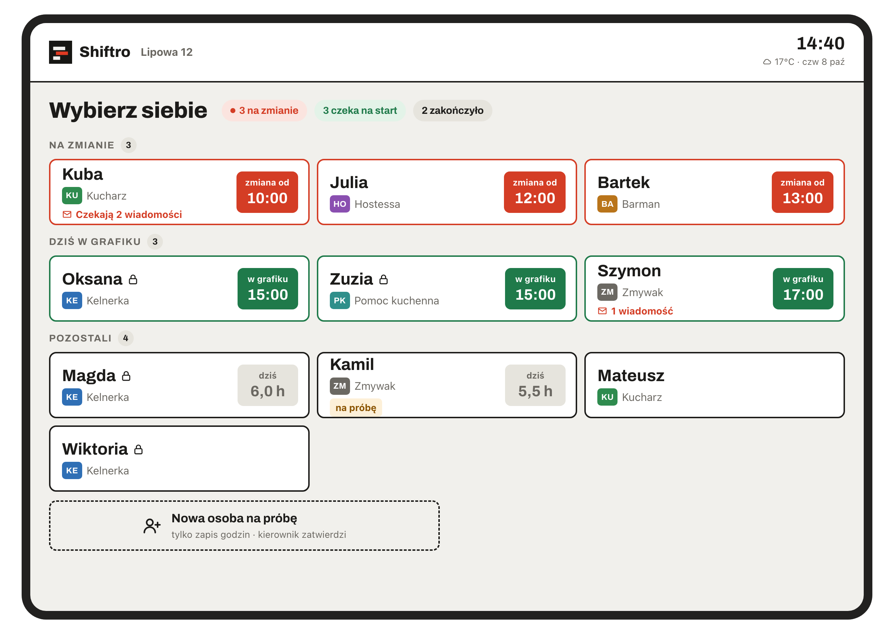
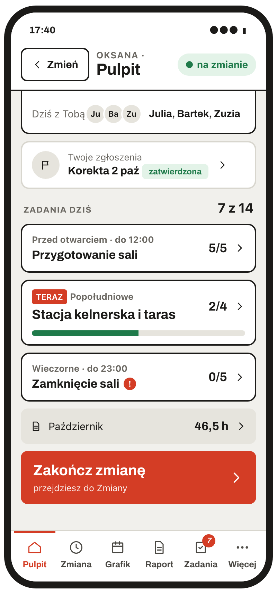
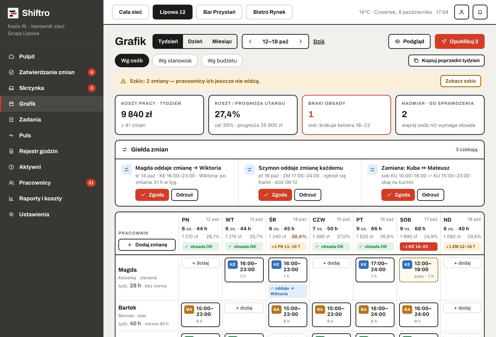
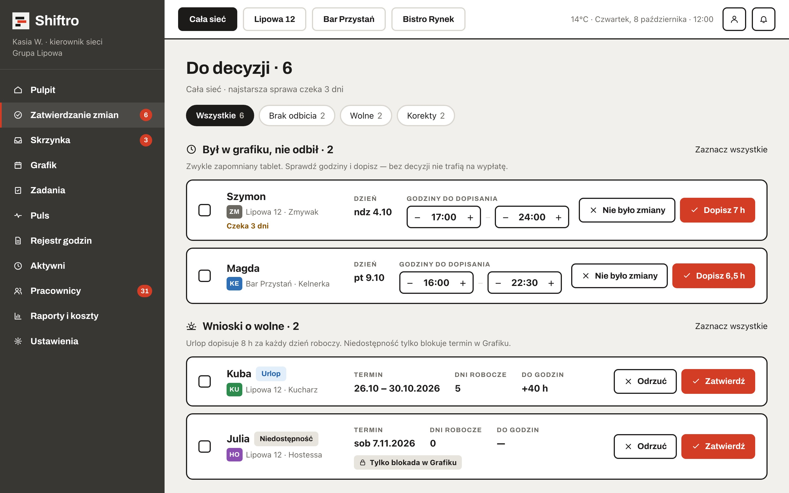
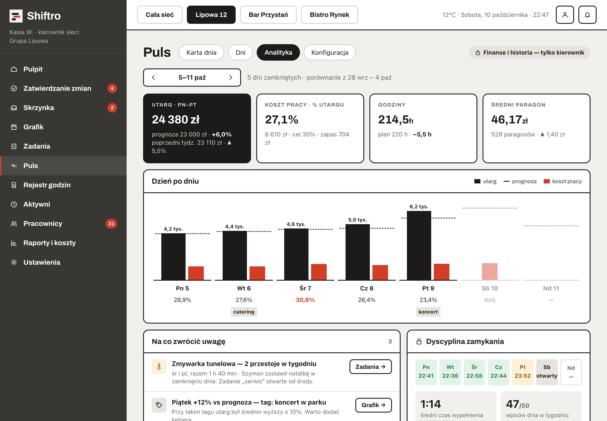
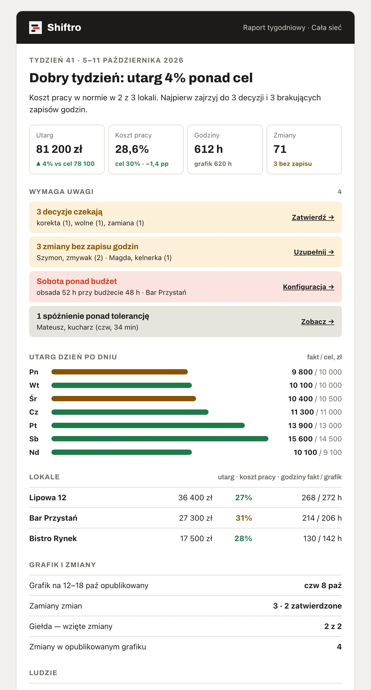
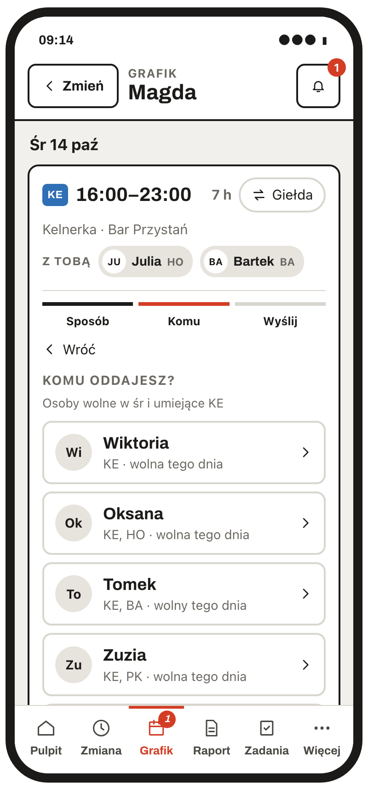
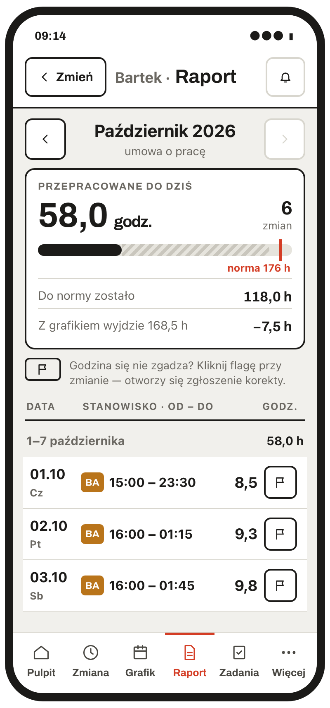

Bon 01piątek, 21:40
Kto dziś zamyka bar?
Zamiany giną w Messengerze, a kartka na drzwiach jest nieaktualna od wtorku.
W Shiftro zamiana czeka na Twoją zgodę i od razu zmienia grafik.
Grafik i czas pracy dla gastronomii
Shiftro układa grafik, zapisuje godziny z tabletu w lokalu i codziennie liczy koszt pracy. Kelnerka sprawdza zmianę w telefonie, zmywak odbija się na tablecie, a Ty wiesz, ile kosztowała sobota, zanim zamkniesz kasę.


Jeden grafik dla całej ekipy
pracują na Shiftro na co dzień, na sali i na zapleczu
trwa wdrożenie, razem z przeniesieniem godzin z Waszego arkusza
zajmuje zamknięcie dnia: utarg, wpisy i notatka dla następnej zmiany
kosztuje test. Nie pytamy o kartę i nie wystawiamy faktury
Brzmi znajomo?
Kto dziś zamyka bar?
Zamiany giną w Messengerze, a kartka na drzwiach jest nieaktualna od wtorku.
W Shiftro zamiana czeka na Twoją zgodę i od razu zmienia grafik.
Ile godzin wyszło w końcu Oli?
Przepisujesz kartki i zgadujesz, kto zapomniał się odbić.
Brak odbicia widać następnego dnia, a godziny dopisujesz jednym kliknięciem.
Opłaciła się ta sobota?
Koszt pracy poznajesz z wypłat, miesiąc po fakcie.
Shiftro liczy go codziennie i zestawia z utargiem.
Jak to działa
Trzy rzeczy, które kierownik robi co tydzień. Shiftro skraca każdą z nich do kilku kliknięć.
1Planujesz

Obsada liczona osobno dla każdego stanowiska. Tu w sobotę brakuje kelnera od 18:00.
2Pilnujesz

Wszystko, co czeka na Twoją decyzję, z odpowiedzią „tak” pod ręką.
3Wiesz


Stanowiska
Każde stanowisko ma w grafiku swój kolor i swoją obsadę. Nazwy ustawiasz po swojemu: „zimna kuchnia”, „bar kawowy”, „duży zmywak”.
Grafik ma w telefonie. Gdy nie może przyjść w sobotę, oddaje zmianę przez giełdę, a Ty tylko klikasz „Zgoda”.
Dotyka swojego imienia na tablecie w lokalu i zmiana startuje. Bez szukania kartki i długopisu przy wejściu.
Widzi własne godziny i normę etatu. Godzina się nie zgadza? Flaga przy zmianie i korekta trafia do kierownika.
Checklisty otwarcia i zamknięcia kuchni na każdą zmianę. Widać, co zrobione, a co jeszcze czeka.
Na pulpicie: zadania na teraz i kto pracuje obok. Nie musi pytać, kto dziś zamyka.
Nie ma smartfona? Nie szkodzi. Tablet w lokalu wystarczy, żeby zapisać godziny co do minuty.
A Ty, kierowniku
Obsadę ustawiasz osobno dla sali, kuchni i baru. Grafik podkreśla dziurę na konkretnym stanowisku i w konkretnych godzinach.
Kodeks pracy i księgowość
Shiftro odróżnia etat od zlecenia i pilnuje tego, o czym łatwo zapomnieć, gdy układasz grafik w piątek wieczorem.
art. 132 KPOstrzeżenie w grafiku, gdy między zmianami jest mniej niż 11 godzin.
norma etatuPrzy etacie widzisz godziny do normy i ponad normą. Zlecenie liczy się bez normy.
ewidencjaOdbicie, korekta i zatwierdzenie z datą i nazwiskiem. Gotowe na pytania PIP.
terminyPrzypomnienie 30, 14 i 7 dni przed końcem badań sanepid lub umowy.
Policz sam
Start
Kilka pytań o lokal i o to, jak dziś prowadzicie grafik.
Link do demo i krótką prezentację dostajesz na e-mail zaraz po wysłaniu ankiety.
Pokazujemy Shiftro na Waszych stanowiskach i mówimy wprost, czy pasuje.
Przenosimy ludzi i godziny z arkusza, ustawiamy tablet. Pierwszy tydzień jesteśmy pod telefonem.
Cennik
W czasie testów wszystko jest bezpłatne. Ceny poniżej są orientacyjne i mogą się zmienić przed startem sprzedaży.
Mały lokal do 10 pracowników, który chce skończyć z grafikiem na drzwiach.
Lokal, który chce rozliczać godziny bez przepisywania kartek.
Właściciel kilku lokali, który chce znać wynik każdego dnia.
Ceny netto. Lokale z testów zachowują cenę z dnia startu przez pierwszy rok.
Kto robi Shiftro
Shiftro tworzy zespół, nie jedna osoba. Każda funkcja zaczyna się od prawdziwego problemu z lokalu: zamiany ustalanej na Messengerze, godzin przepisywanych z kartek, kosztu pracy widocznego miesiąc po fakcie.
Dla zespołu
Duże przyciski i czytelne godziny, także dla tych, którzy nie lubią aplikacji. Na tablecie w lokalu albo na własnym telefonie, bez instalowania czegokolwiek.


Pytania
Grafik do 10 pracowników zostaje bezpłatny. Standard to orientacyjnie 199 zł, a Pełny 349 zł miesięcznie za lokal. Lokale z testów zachowują cenę startową przez pierwszy rok.
Nie. W lokalu stoi tablet, na którym pracownik dotyka swojego imienia. Kto chce, otwiera Shiftro w przeglądarce telefonu i może dodać ikonę na ekran.
Stanowiska nazywacie po swojemu: kelner, hostessa, barman, kucharz, pomoc kuchenna, zmywak, kierowca, bar kawowy. Każde ma własny kolor w grafiku i własną obsadę.
Wystarczy stary telefon albo najtańszy tablet z Wi-Fi. Możecie też zacząć tylko od telefonów pracowników.
Na serwerach w Unii Europejskiej. Podpisujemy umowę powierzenia danych (RODO). Dane możecie wyeksportować i usunąć w każdej chwili.
Zmiana zapisze się, gdy połączenie wróci, z faktyczną godziną. W najgorszym razie pracownik dopisze ją jako korektę.
Przy wdrożeniu przenosimy pracowników, stanowiska i godziny z Waszego arkusza. Nie trzeba niczego przepisywać ręcznie.
Kończycie w dowolnym momencie i dostajecie eksport wszystkich godzin. Bez faktury i bez umowy na rok.